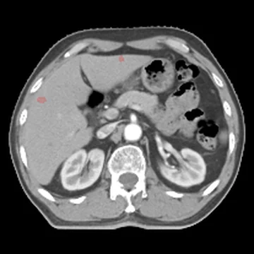
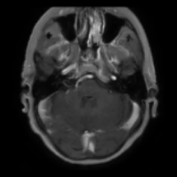
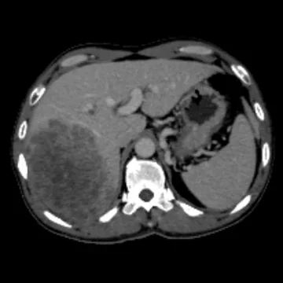
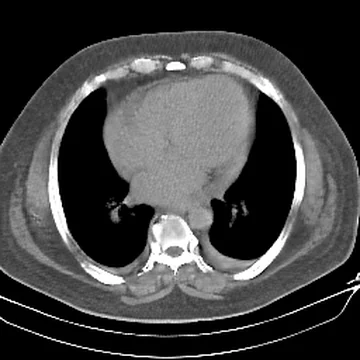
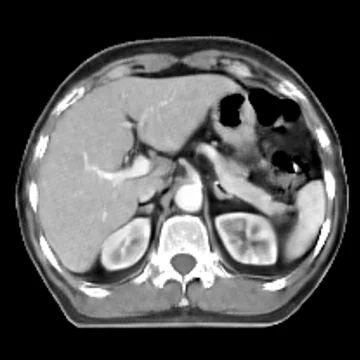
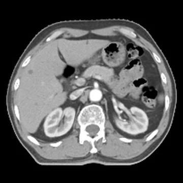
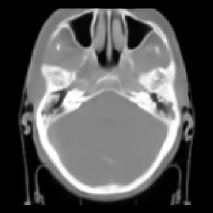
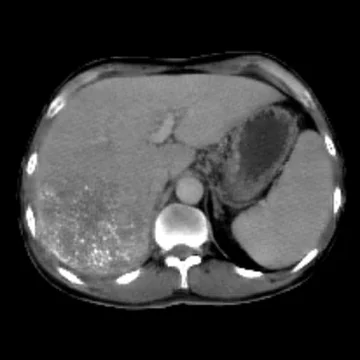
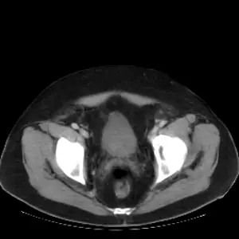

RadWorld
A World Foundation Model for 3D Tomographic Medical Imaging
1Monash University 2Ant Healthcare 3Shanghai Artificial Intelligence Laboratory 4Stanford University School of Medicine 5Shanghai Innovation Institute 6The First Affiliated Hospital of Jinan University 7Fudan University 8Fuzhou University
‡ Equal contribution · * Corresponding authors
Generate the 3D scan you need from the clinical information you have
Radiology report
“… There is a mild pericardial effusion, up to 12 mm thick. …”
Organ mask
Tumor mask

Source modality

Pre-treatment CT

+ procedural variables
RadWorldRadiologic world foundation model

CT with the findings

CT matching the mask

CT with synthetic tumors

Target modality

Virtual post-treatment CT
Generated by RadWorld



Generation
Realistic CT and MRI, generated in full 3D
Pretrained on 232,781 CT and MRI scans from 152 datasets.
Visual Turing test
Can you tell real from synthetic?
58.8%of the time, board-certified radiologists took RadWorld's synthetic tumor scans for real.
Your turn: ten cases from the study
Each tumor is outlined, as it was for the radiologists.
Answers stay in your browser.
Classification accuracy by reader experience
Blinded reading of real and synthetic tumor scans
| Readers | Accuracy (%) |
|---|---|
| Junior radiologists | 52.9 |
| All radiologists | 59.7 |
| Senior radiologists | 66.0 |
Synthetic data
Synthetic scans that improve medical AI
Added to real training data, RadWorld scans improved classification, segmentation and report generation more than other generators (synthetic scans twice the real data).
Better than real-only training for every abnormality, with the highest overall AUC
AUC for chest CT abnormalities, higher is better
| Abnormality | Real data only | + GenerateCT | + MedSyn | + RadWorld |
|---|---|---|---|---|
| Hiatal hernia | 0.477 | 0.483 | 0.489 | 0.609 |
| Lung opacity | 0.546 | 0.559 | 0.613 | 0.632 |
| Atelectasis | 0.566 | 0.582 | 0.608 | 0.690 |
| Adenopathy | 0.623 | 0.612 | 0.623 | 0.650 |
| Pericardial effusion | 0.633 | 0.641 | 0.635 | 0.672 |
| Calcification | 0.579 | 0.614 | 0.680 | 0.688 |
| Lung nodule | 0.609 | 0.647 | 0.673 | 0.673 |
| Emphysema | 0.535 | 0.586 | 0.676 | 0.772 |
| Bronchiectasis | 0.610 | 0.679 | 0.615 | 0.784 |
| Consolidation | 0.644 | 0.657 | 0.724 | 0.723 |
| Fibrotic sequela | 0.645 | 0.756 | 0.737 | 0.826 |
| Pleural effusion | 0.790 | 0.813 | 0.852 | 0.902 |
| Overall | 0.613 | 0.650 | 0.665 | 0.723 |
Highest Dice across all eight tumor types
Dice for eight cancers, higher is better
| Cancer | Real data only | + DiffTumor | + FreeTumor | + RadWorld |
|---|---|---|---|---|
| NPC | 0.576 | 0.590 | 0.598 | 0.629 |
| HNSCC | 0.632 | 0.653 | 0.654 | 0.675 |
| NSCLC | 0.625 | 0.651 | 0.691 | 0.723 |
| HCC | 0.599 | 0.700 | 0.703 | 0.730 |
| PDAC | 0.487 | 0.541 | 0.535 | 0.588 |
| CRC | 0.438 | 0.476 | 0.476 | 0.531 |
| RCC | 0.729 | 0.762 | 0.764 | 0.783 |
| BLCA | 0.673 | 0.726 | 0.724 | 0.764 |
Highest scores across all report metrics and regions
Text similarity (BLEU-2, ROUGE-L, METEOR) and clinical accuracy (GREEN), higher is better
| Region | Real data only | + GenerateCT | + MedSyn | + RadWorld |
|---|---|---|---|---|
| Chest | 0.215 | 0.263 | 0.264 | 0.270 |
| Abdomen | 0.320 | 0.340 | 0.342 | 0.358 |
| Pelvis | 0.193 | 0.252 | 0.250 | 0.258 |
| Chest | 0.311 | 0.320 | 0.316 | 0.324 |
| Abdomen | 0.413 | 0.426 | 0.429 | 0.442 |
| Pelvis | 0.373 | 0.377 | 0.372 | 0.388 |
| Chest | 0.322 | 0.336 | 0.339 | 0.352 |
| Abdomen | 0.373 | 0.399 | 0.395 | 0.410 |
| Pelvis | 0.424 | 0.428 | 0.429 | 0.435 |
| Chest | 0.266 | 0.274 | 0.288 | 0.314 |
| Abdomen | 0.421 | 0.442 | 0.446 | 0.501 |
| Pelvis | 0.665 | 0.686 | 0.690 | 0.741 |
Translation
Translate across modalities, sequences and contrast phases
Generate a missing CT, MRI sequence or contrast phase from the scans you have.
Treatment
Virtual post-treatment CT supports survival prediction
For liver cancer treated with chemoembolization (TACE), RadWorld generates the post-treatment CT from the pre-treatment CT and treatment details. The virtual CT predicted progression-free survival nearly as well as the real follow-up CT.
Input
RadWorld output
For comparison

Treatment details
- Chemotherapy
- Pirarubicin 12 mg, lobaplatin 15 mg
- Lipiodol
- 5 mL
- Target artery
- Superior mesenteric artery


Input
RadWorld output
For comparison

Treatment details
- Chemotherapy
- Pirarubicin 20 mg, oxaliplatin 100 mg
- Lipiodol
- 20 mL
- Target artery
- Right hepatic artery


Improves survival prediction, comparable to real post-TACE CT
C-index for progression-free survival, higher is better
| Cohort | Pre-TACE CT only | + patient and procedural variables | + real post-TACE CT | + virtual post-TACE CT |
|---|---|---|---|---|
| Cohort A | 0.577 | 0.595 | 0.732 | 0.727 |
| Cohort B | 0.571 | 0.595 | 0.726 | 0.721 |
Cohort A
Progression-free survival of risk groups predicted from virtual post-TACE CT
Hazard ratio 2.73, P < 0.0001
Cohort B
Progression-free survival of risk groups predicted from virtual post-TACE CT
Hazard ratio 2.45, P < 0.0001
Citation
Cite RadWorld
@article{ye2026radworld,
title = {A World Foundation Model for 3D Tomographic Medical Imaging},
author = {Ye, Jin and Ma, Chenglong and Zhang, Lu and others},
journal = {arXiv preprint},
year = {2026}
}
Contact
- Jin Yejin.ye@monash.edu
- Yuanfeng Jiyfj@stanford.edu
- Jianfei Caijianfei.cai@monash.edu
- Junjun Hehejunjun@pjlab.org.cn